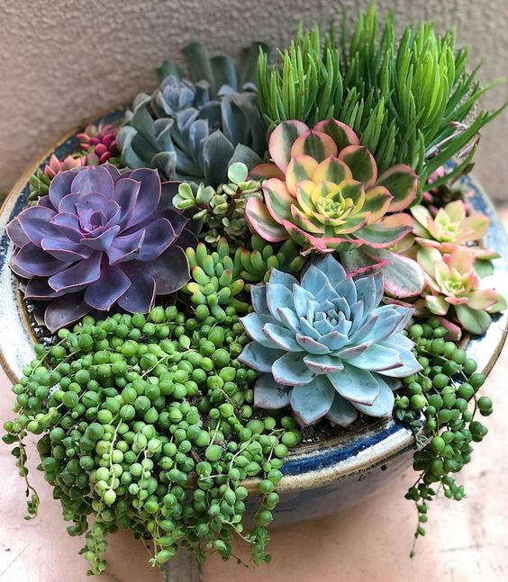
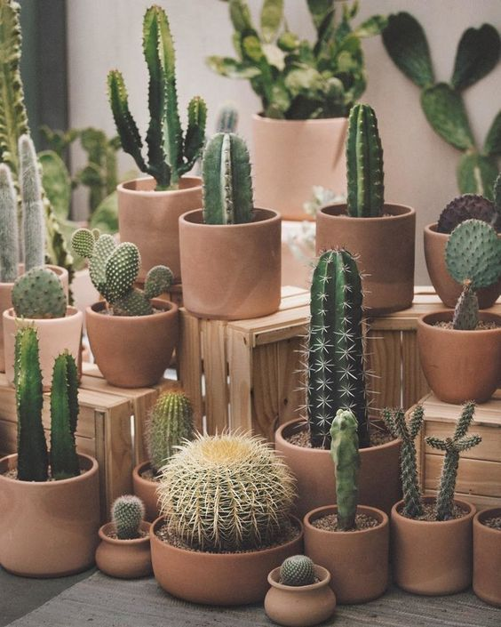

Las plantas crasas, también conocidas por muchos como plantas suculentas o carnosas, son muy habituales en los hogares debido a sus magníficas cualidades decorativas y su sencillo mantenimiento. Las plantas suculentas se caracterizan por unas hojas, tallos y flores de aspecto mullido y carnoso debido a que funcionan con un sistema de supervivencia que les permite guardar agua en su interior para poder autohidratarse cuando les sea necesario. La mayoría proviene de zonas desérticas y semidesérticas así que prefieren los ambientes secos y templados o cálidos. Son ideales para interior ya que sufren cuando la temperatura es cercana a 0º.

Cactus
Sus hojas evolucionaron a espinas a fin de ayudarles a tener sus propias reservas de agua en el tronco. Además de ayudar a capturar las gotas del rocío, las espinas protegen del sol. Aunque parezca un asunto espinoso, cuidar cactus es bastante sencillo. Lo primero que llama la atención es su resistencia, especialmente si no tienes buena mano con las plantas, y lo bien que se adapta a los distintos climas. Pero, sobre todo, lo más peliagudo del tema es el momento de trasplantarlo (más que por él, por tus manos).

Cuidados de los cactus y suculentas
Si estás buscando plantas que sean llamativas y bonitas pero que prácticamente se mantengan solas, los cactus y las suculentas son las plantas perfectas para ti. Estas plantas parecen no pasar de moda, desde que tengo uso de razón las he visto en jardines de todo tipo y embelleciendo nuestro planeta. Conoce aquí cómo cuidarlas mejor en casa.